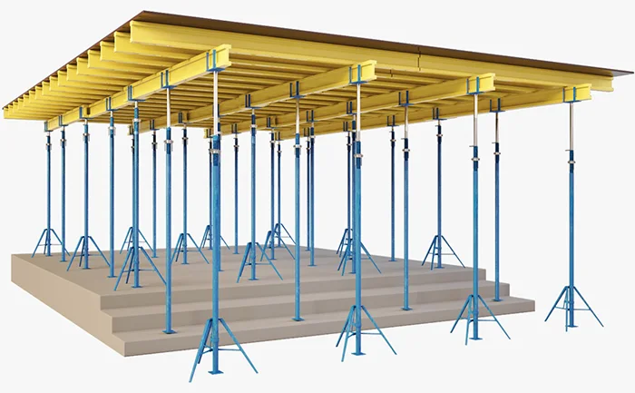
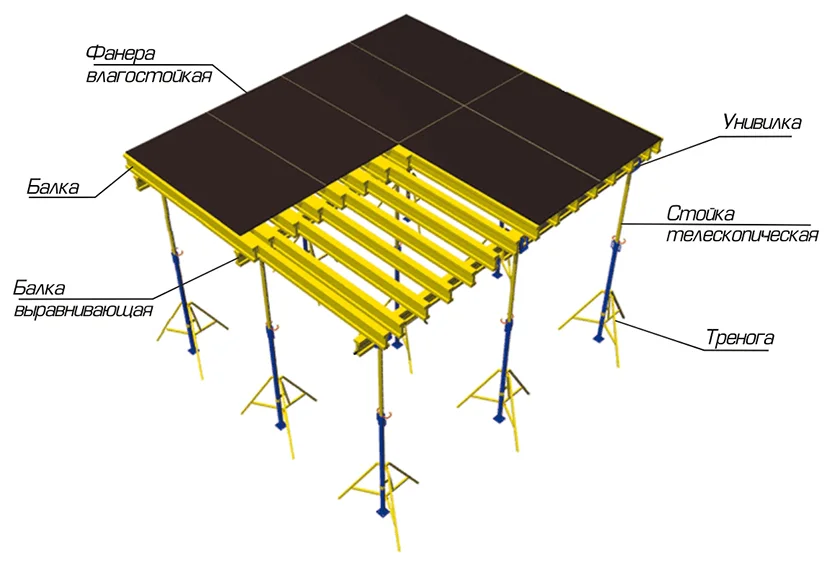

В опалубке монолитных перекрытий телескопические стойки применяются как опорные элементы с диапазоном максимальных высот от 2,5 до 4,9 м.
Несущая способность стоек напрямую зависит от их высоты и способа закрепления. Изменение высоты стойки достигается выдвижением внутренней трубы с отверстиями, которая фиксируется замком.
Перемещением наружной резьбовой муфты достигается проектная высота. В вертикальном положении стойка удерживается треногой. Для фиксации продольных балок применяется унивилка.
В опалубке перекрытий, с применением телескопических стоек, могут быть использованы балки как алюминиевые, так и деревянные.
Набор дополнительных комплектующих для опалубки перекрытия обеспечит удобство и безопасность строительных работ.
Телескопические стойки для опалубки перекрытий
|
Наименование |
Высота стойки, м |
Диаметр внеш. трубы, мм |
Диаметр внут.
трубы, мм |
Нагрузка (max), кг |
Вес, кг |
Цена, руб |
|
Стойка 1,65 м. |
1,05 - 1,65 | 60х2,0 | 50х2,5 | 2250-3700 | 6,3 | 1 120 |
|
Стойка 2,0 м. |
1,28 - 2,00 |
60х2,0 |
50х2,5 |
2100-3700 |
7,3 |
1 255 |
|
Стойка 2,55 м. |
1,59 - 2,55 |
60х2,0 |
50х2,5 |
1950-3700 |
8,7 |
1445 |
|
Стойка 2,75 м. |
1,67 - 2,75 |
60х2,0 |
50х2,5 |
1800-3700 |
9,2 |
1 520 |
|
Стойка 3,1 м. |
1,90 - 2,75 |
60х2,0 |
50х2,5 |
1800-3700 |
10,4 |
1 730 |
|
Стойка 3,7 м. |
2,14 - 3,70 |
60х2,0 |
50х2,5 |
1500-3400 |
11,8 |
1 945 |
|
Стойка 4,2 м. |
2,60 - 4,20 |
60х2,0 |
50х2,5 |
1250-2550 |
13 |
2 150 |
|
Стойка 4,5 м. |
2,96 - 4,50 |
60х2,0 |
50х2,5 |
1000-2500 |
14 |
2 405 |
|
Стойка 4,9 м. |
3,36 - 4,90 |
60х2,0 |
50х2,5 |
800-2500 |
15,2 |
2 560 |


|
Комплектующие к опалубке перекрытий |
|||||||||
|
|
Тренога Обеспечивает устойчивость и фиксацию в вертикальном положении телескопической стойки при проведении монтажа опалубки перекрытия.
|
||||||||
|
Унивилка Обеспечивает опору и фиксацию продольных деревянных балок на телескопической стойке.
|
|||||||||
|
Балка деревянная клееная опалубки перекрытий ГОСТ 23478-79 |
|||||||||
|
|
Балка двутавровая для опалубки перекрытий изготавливается из хвойных пород древесины и березовой фанеры повышенной влагостойкости с последующей обработкой водонепроницаемым составом. Это позволяет применять балку в строительстве при любых погодных условиях.
Балка имеет высокую несущую способность и может монтироваться на больших площадях без таких дефектов, как изгиб, усадка и трещины.
|


 |
 |